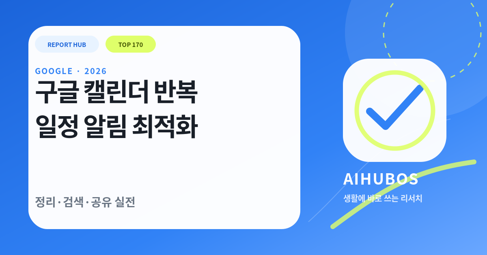

TOP 200 SERIES · 2026.08.09
지금 바로 적용할 수 있을까?
구글 캘린더 반복 일정·알림 최적화
구글 캘린더 반복 일정·알림 최적화을 막연한 추천이 아니라, 초보자가 오늘 바로 따라 할 수 있는 순서로 정리했습니다. 핵심은 가족·팀 일정의 공유 규칙이며, 공식 지원 범위와 개인정보·비용·실패 가능성까지 함께 확인하는 것입니다.

원문 목차 그대로
설정 → 알림 → 관리 → 실전
공식 자료 우선
3개 공식·공공 출처를 2026.08.09 기준으로 연결했습니다.
84점 / 100
실용성·검색 의도·근거·한국 연관성을 합산한 편집 점수입니다.
ONE-MINUTE BRIEF
1분 안에 잡는 핵심
가족·팀 일정의 공유 규칙을 초보자 관점에서 단계별로 정리한 2026년 실전 가이드. 공식 자료, 예시, 체크리스트와 주의사항을 포함합니다.
REPORT HUB VERDICT
자동화보다 먼저 폴더·권한·이름 규칙을 정하면 Google 도구가 생활 정보의 검색 가능한 허브가 됩니다.
먼저 가장 작은 사례 한 건으로 시험하고, 공식 지원 조건과 실제 비용을 확인한 뒤 확대하세요.
100점 만점 자동 진단
첨부 파일 목차 단계
공식·공공 자료 우선
한 건 시험 후 확대
STEP 01
설정
초보자는 아래 3단계로 시작하면 됩니다. 화면 이름이나 제공 범위는 계정·기기·지역·버전에 따라 달라질 수 있으므로, 실제 메뉴와 공식 도움말을 함께 확인하세요. [출처 1]
- 01
준비 — 일정 제목·색상·알림 규칙을 통일합니다.
- 02
실행 — 공개 범위와 수정 권한을 최소화합니다.
- 03
검수 — 반복 일정은 종료일과 예외 날짜를 함께 관리합니다.
STEP 02
알림
이 단계의 목표는 가족·팀 일정의 공유 규칙을 실제 행동으로 옮기는 것입니다. 아래 원칙을 그대로 복사하기보다 자신의 시간·예산·기기·가족 구성에 맞게 한 항목씩 조정하세요. [출처 2]
- 01
일정 제목·색상·알림 규칙을 통일합니다.
- 02
공개 범위와 수정 권한을 최소화합니다.
- 03
반복 일정은 종료일과 예외 날짜를 함께 관리합니다.
STEP 03
관리
효과는 느낌보다 기록으로 확인해야 합니다. 적용 전 기준선을 남기고 1~2주 뒤 같은 조건에서 시간·비용·오류·만족도를 비교하세요. 효과가 없으면 기능을 더 추가하기보다 입력과 절차를 단순화합니다.
- 01
시간: 한 번에 몇 분이 줄었는가
- 02
품질: 수정·오류·재작업이 줄었는가
- 03
지속성: 2주 뒤에도 같은 방식이 유지되는가
STEP 04
실전
이 단계의 목표는 가족·팀 일정의 공유 규칙을 실제 행동으로 옮기는 것입니다. 아래 원칙을 그대로 복사하기보다 자신의 시간·예산·기기·가족 구성에 맞게 한 항목씩 조정하세요. [출처 3]
- 01
일정 제목·색상·알림 규칙을 통일합니다.
- 02
공개 범위와 수정 권한을 최소화합니다.
- 03
반복 일정은 종료일과 예외 날짜를 함께 관리합니다.
PRACTICAL TEMPLATE
저장해 두는 3문장 체크리스트
브랜드나 제품이 바뀌어도 그대로 쓸 수 있는 최소 점검 항목입니다.
PRACTICAL COMPARISON
한눈에 보는 선택지
같은 목표라도 비용·편의·통제 수준이 다릅니다. 아래 표에서 자신의 제약에 가까운 방식을 고르세요.
| 선택지 | 장점 | 확인할 점 |
|---|---|---|
| 개인 전용 | 검색과 자동화가 쉬움 | 개인정보 설정 중요 |
| 가족 공유 | 일정·앨범 협업 | 권한과 삭제 동기화 주의 |
| 팀 공유 | 문서 협업과 버전 관리 | 소유권·퇴사자 접근 관리 |
TIME SAVINGS
반복 작업 절약시간 계산기
절약시간에서 검수·수정 시간을 빼야 실제 효과를 알 수 있습니다.
월 순절약시간-4.33주 기준
7-DAY ACTION PLAN
일주일 안에 끝내는 적용 순서
한 번에 모든 기능을 바꾸지 말고, 작은 기준선을 만든 뒤 확대합니다.
기준선 기록
일정 제목·색상·알림 규칙을 통일합니다. 현재 시간·비용·불편을 5분 안에 적습니다.
작은 시험
공개 범위와 수정 권한을 최소화합니다. 실제 사례 한 건으로만 실행합니다.
검수와 저장
반복 일정은 종료일과 예외 날짜를 함께 관리합니다. 효과가 확인된 절차만 체크리스트로 남깁니다.
RISKS & COUNTERPOINTS
놓치기 쉬운 반론과 한계
핵심 주의
자동 분류와 AI 요약은 오류가 날 수 있고 공유 권한·위치·얼굴 정보는 개인정보에 해당할 수 있습니다.
최신 기능이나 인기 종목이면 누구에게나 정답이다.
지원 조건·가격·데이터·시간·위험 감수 수준에 따라 결과가 달라집니다.
공식 원문 확인→작은 시험→기준선 비교→중단 조건 기록 순서를 지킵니다.
FAQ
초보자가 자주 묻는 질문
구글 캘린더 반복 일정·알림 최적화, 무료로 시작할 수 있나요?
기본 기능이나 무료 도구로 시험할 수 있는 경우가 많지만, 요금제·기기·지역·프로모션 조건은 달라질 수 있습니다. 공식 가격과 계정 화면을 확인하세요.
얼마나 자주 설정을 점검해야 하나요?
처음 2주 동안은 매주, 이후에는 OS·앱·가격·약관이 바뀌거나 불편이 생길 때 점검하는 방식이 현실적입니다.
AI나 자동화 결과를 그대로 사용해도 되나요?
아닙니다. 이름·날짜·가격·수치·지원 범위와 개인정보를 확인하고, 건강·법률·투자·안전 결정은 전문가나 공공기관 안내로 검증해야 합니다.
가장 먼저 할 한 가지는 무엇인가요?
일정 제목·색상·알림 규칙을 통일합니다.